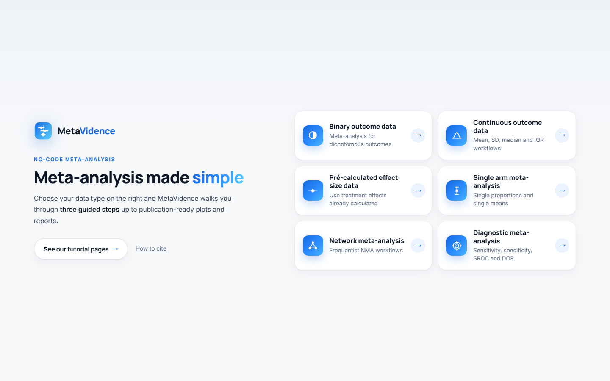
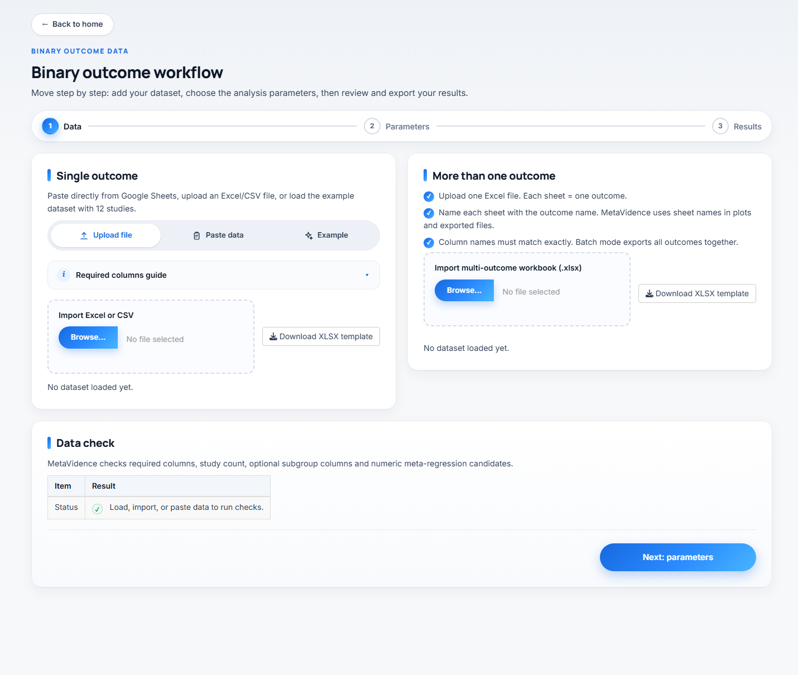
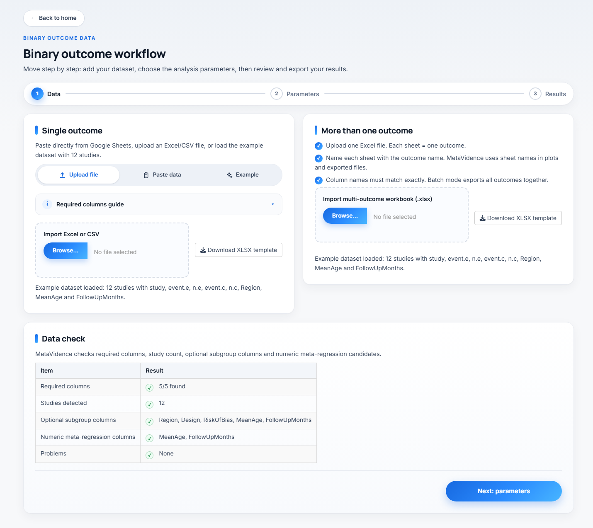
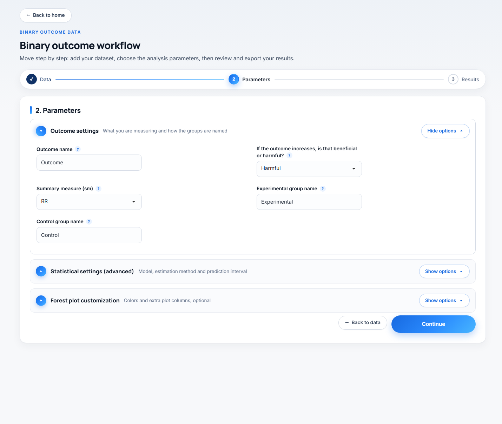
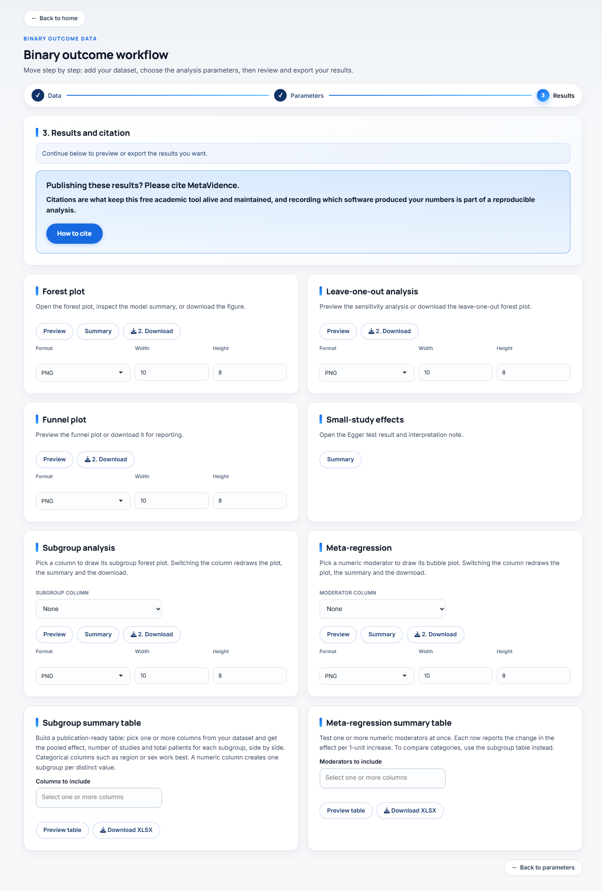
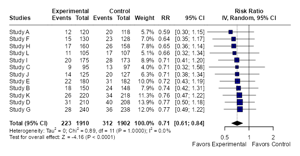
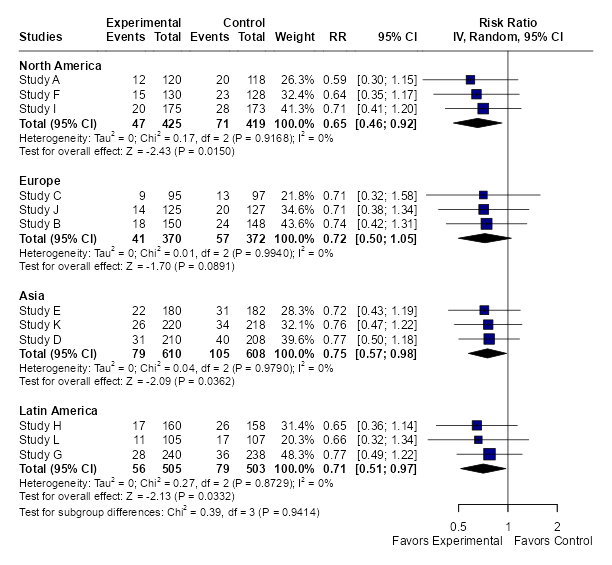
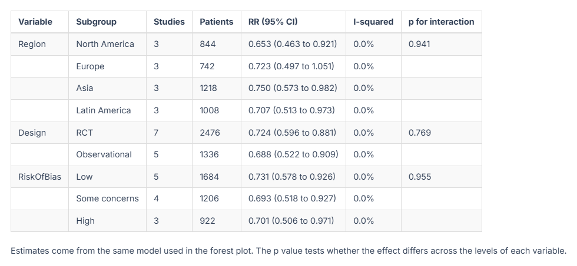

O fluxo em três passos
Como todo módulo funciona: dados, parâmetros, exportação
Todos os módulos do MetaVidence seguem a mesma sequência, sempre na mesma ordem: carregar os dados, escolher os parâmetros, revisar e exportar os resultados.
Esta página percorre esse fluxo inteiro, tela por tela. As imagens são do módulo de desfechos binários, mas o que está descrito aqui vale para todos. Cada página de módulo trata só do que muda nele.
O ponto de partida

Na página inicial, clique no cartão do tipo de dado que você tem. A tabela da página inicial dos tutoriais diz qual módulo serve para cada formato.
Passo 1, os dados

Você tem três caminhos, nas abas do cartão à esquerda:
- Upload file envia um Excel ou CSV. O botão de baixar o modelo de planilha está ao lado, já com os nomes de coluna corretos.
- Paste data cola direto do Google Sheets ou do Excel.
- Example carrega 12 estudos fictícios, para explorar o app sem preparar nada.
As colunas obrigatórias
O guia recolhível logo abaixo das abas lista o que a planilha precisa ter, com os nomes exatos das colunas daquele módulo. A página de cada módulo traz a mesma lista.
Qualquer coluna a mais é opcional. Colunas de texto ficam disponíveis para análise de subgrupo, e colunas numéricas para meta-regressão. Nos conjuntos de exemplo há Region, Design, RiskOfBias, MeanAge e FollowUpMonths.
O Data check

Assim que os dados entram, o cartão Data check confere e informa: se as colunas obrigatórias estão todas lá, quantos estudos foram detectados, quais colunas sobraram para subgrupo e meta-regressão, e se há problemas, como células em branco, eventos maiores que o total ou tamanhos amostrais iguais a zero.
Vale ler antes de seguir. É mais rápido corrigir a planilha agora do que descobrir o erro no meio da análise.
Quando estiver tudo certo, clique em Next: parameters.
Passo 2, os parâmetros

Os campos vêm separados em duas seções. Outcome settings abre por padrão, porque é a que quase sempre se mexe. Statistical settings (advanced) vem recolhida, porque os padrões servem à maioria dos casos.
Cada campo tem um “?” ao lado com um resumo da explicação, dentro do próprio app.
Outcome settings
Outcome name (padrão Outcome) entra no título dos gráficos e no nome dos arquivos exportados. Vale trocar por algo curto e específico, como Mortalidade em 30 dias, porque é assim que o arquivo vai chegar ao seu computador.
If the outcome increases, is that beneficial or harmful? (padrão Harmful) só define os rótulos “Favors experimental” e “Favors control” embaixo do forest plot. Não muda nenhum número. Escolha Harmful para desfechos ruins, como morte, e Beneficial para desfechos bons, como cura.
Experimental group name e Control group name definem como os grupos aparecem nos gráficos. Trocar por nomes reais, como Anticoagulante e Placebo, deixa a figura pronta para publicação.
Summary measure (sm) decide o que será agrupado, e as opções mudam de módulo para módulo. É a escolha mais importante desta tela, então ela está explicada na página de cada módulo.
Braço único não tem direção nem nomes de grupo, porque não há comparação. Rede tem dois campos próprios aqui, e diagnóstica quase não tem nada. Veja a página do módulo.
Statistical settings (advanced)
Estes campos são os mesmos na maioria dos módulos, com os mesmos padrões e as mesmas recomendações.
Analysis model (padrão Random-effects).
Random-effectsdeixa o efeito verdadeiro variar entre estudos. É a escolha usual, porque populações, doses e tempos de seguimento quase sempre diferem.Fixed-effectassume que todos os estudos estimam exatamente o mesmo efeito. Só se justifica em réplicas muito próximas.Bothdesenha as duas linhas no mesmo forest plot. É uma boa forma de mostrar ao leitor que a conclusão não dependeu da escolha do modelo.
Recomendação: mantenha Random-effects, e use Both quando quiser deixar a comparação explícita no artigo.
Tau method (padrão REML) é o estimador da variância entre estudos, o τ², que governa os pesos do modelo aleatório, o I² e o intervalo de predição. Recomendação: mantenha REML. Use DL (DerSimonian-Laird) apenas para reproduzir uma análise antiga, já que foi o padrão histórico. PM e SJ são alternativas defensáveis quando há poucos estudos. ML tende a subestimar o τ².
I-squared method (padrão Q) define como o I² é calculado. Q é a definição clássica de Higgins e Thompson, I² = (Q − gl)/Q, que é o que praticamente todo artigo publicado reporta e o que o pacote meta usa por padrão. From tau-squared deriva o valor do τ² estimado. Os dois podem divergir bastante: nos mesmos quatro estudos, 89,9% com Q e 97,2% com τ². Nenhum está errado, eles respondem a perguntas ligeiramente diferentes, mas não são intercambiáveis num manuscrito. Recomendação: mantenha Q, a menos que tenha um motivo declarado, e diga nos métodos qual você usou.
Prediction interval acrescenta ao forest plot a faixa onde se espera o efeito de um estudo futuro. Precisa de pelo menos 3 estudos. Recomendação: ligue quando houver heterogeneidade relevante, porque é a forma mais honesta de mostrar o que a heterogeneidade significa na prática. Com 3 ou 4 estudos o intervalo sai tão largo que raramente informa algo. O padrão varia por módulo.
Random CI method (padrão classic) define como o intervalo de confiança do efeito agrupado é calculado no modelo aleatório.
classicusa a aproximação normal.HK, Hartung-Knapp, usa a distribuição t e em geral alarga o intervalo, com cobertura melhor quando há poucos estudos.KR, Kenward-Roger, segue a mesma ideia com um ajuste da variância.
Recomendação: considere HK quando tiver poucos estudos, digamos menos de 10, e heterogeneidade presente. Mantenha classic se precisar ser comparável a uma análise já publicada. Em situações raras o HK produz um intervalo mais estreito que o classic, então vale olhar os dois antes de decidir.
Prediction method (padrão V) define como o intervalo de predição é calculado. V usa a distribuição t com k-1 graus de liberdade e HTS usa t com k-2, portanto é um pouco mais conservador. Recomendação: mantenha V.
Method, o método de agrupamento, só existe nos módulos binário e de proporções únicas, com opções diferentes em cada um. Veja a página do módulo.
Subgrupo e meta-regressão
Essas duas colunas não são escolhidas aqui. Tanto em desfecho único quanto em lote, você escolhe no passo 3, dentro do próprio cartão do resultado, e a análise é refeita para a coluna escolhida.
Quando estiver pronto, clique em Run analysis.
Passo 3, exportação e resultados

O cartão 3. Results and citation no topo traz o status da análise e o lembrete de citação. Abaixo dele vem a grade de resultados.
Cada resultado tem seu cartão. A maioria traz Preview para ver na tela, Summary para o resumo numérico e Download para salvar. Alguns cartões não têm preview, e neles o botão se chama Download plot para não ser confundido com o resumo. Formato, largura e altura ficam em cada cartão: PNG sai em 600 DPI e PDF sai vetorial, os dois adequados para submissão.
Aumente a altura no próprio cartão e baixe de novo. Isso resolve quase todos os cortes, porque a área do gráfico é dividida entre as linhas de estudos e o rodapé com as estatísticas.
Não recarregue nem feche a aba enquanto houver resultado que você ainda não baixou. O app guarda tudo na memória da sessão: recarregar começa uma sessão nova, e os dados carregados e os resultados se perdem. Não há como recuperar sem rodar a análise de novo.
Nem todo módulo traz todos os cartões abaixo. Rede e diagnóstica têm conjuntos próprios, descritos nas páginas delas.
Forest plot

O gráfico principal. Cada estudo com seu efeito e intervalo de confiança, o peso que recebeu, e o losango do efeito agrupado no rodapé. Abaixo dele vêm a heterogeneidade (τ², Q, I²) e o teste do efeito global.
Leave-one-out analysis
Refaz o agrupamento tirando um estudo por vez, e desenha o resultado de cada rodada. Serve para responder se algum estudo isolado está sustentando a conclusão. Se a estimativa se move pouco, o resultado é robusto. Se um estudo muda a direção ou a significância, isso precisa ser dito no artigo.
Funnel plot
O gráfico de funil, efeito contra precisão. Assimetria sugere viés de publicação, mas também pode vir de heterogeneidade real ou de estudos pequenos com qualidade diferente. Interprete com cautela abaixo de 10 estudos.
Small-study effects
Este cartão tem só o botão Summary, e abre o resultado do teste de Egger com uma nota de interpretação. É o teste formal para a assimetria que você viu no funil.
Subgroup analysis

Escolha uma coluna no seletor dentro do cartão e o gráfico é redesenhado na hora. Não é preciso voltar ao passo 2 nem rodar a análise de novo.
O efeito agrupado global não muda ao pedir subgrupos. A mesma análise é reexecutada com os mesmos parâmetros, só que particionada. O que aparece a mais é o efeito de cada nível e o teste de diferença entre subgrupos, no rodapé.
Meta-regression
Escolha um moderador numérico e o app desenha o gráfico de bolhas, com o tamanho de cada bolha proporcional ao peso do estudo, e a reta ajustada. O Summary traz o coeficiente, o intervalo, o valor de p e o R² do modelo.
O seletor lista apenas colunas numéricas, como MeanAge ou FollowUpMonths. Moderadores categóricos são o caso da análise de subgrupo, não deste cartão.
Uma regra de bolso comum é pelo menos 10 estudos por moderador. Abaixo disso o coeficiente é instável e a reta parece mais convincente do que é.
Subgroup summary table e Meta-regression summary table
Aqui você seleciona várias colunas de uma vez e recebe uma tabela única. A de subgrupo traz o efeito por nível, o número de estudos, o I² e o valor de p da interação de cada variável. A de meta-regressão traz os coeficientes de cada moderador numérico. São as tabelas que costumam ir para o artigo, e as duas saem em XLSX.
